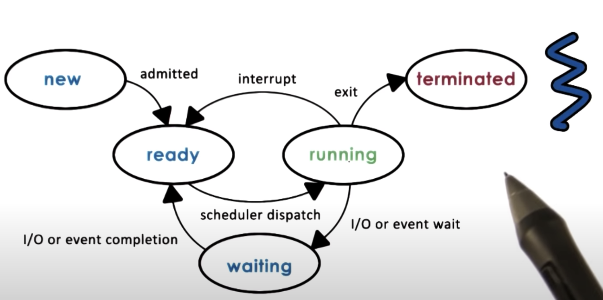

C Tutorial
What is an Operating System
An operating system abstract and arbitrary the use of underlying hardware
OS modes
OS has two modes, (privileged) kernel mode and (unprivileged) user mode. Kernel mode allows access to hardware while user mode does not. If application tries to access hardware directly, that instruction will be trapped and OS will step in to verify if the instruction should go through or not.
OS Services
- Scheduler: controlling access to CPU
- Memory Manager: allocating physical memory to different applications
- Block Device Driver: managing access to block device such as disk
- Higher Level Services: file system, process management, device management and etc
OS System Calls
LINUX System Call Quick Reference
OS Design
- Monolithic
- Compile time optimized, everything is included
- Unmaintainable, more memory required
- Modular
- Include basic APIs, most commonly used
- Good maintainability
- Indirection can (slightly) impact performance due to interfaces
- Microkernel
- Only require the most basic primitives at OS level, everything else like FS and drivers would run at user level
- Requires lots of inter-process communication
- Good size and verifiability (embedded systems, microcontrollers)
- Complexity of software development; cost of user/kernel crossing
Processes and Process Management
A process is an stance of an executing program
Process States
- Text and data: static state when process first loads
- Heap: dynamically created during execution
- Stack: grows and shrinks during execution, LIFO queue
Address Space
Address space is virtual, it's a in memory representation of a process. Page table is mapping of virtual to physical address
Different processes can have the same address space range and the exact same (virtual) addresses
Process Execution State
OS uses program counter to keep track of processes instructions, it's maintained on the CPU's registers while process is executing. OS also uses stack pointer of each process to keep track its state.
Process Control Block
A PCB is a data structure OS maintains for every process, it's created when process is created. It keeps the following information:
- process state
- process number
- program counter
- registers
- memory limits
- list of open files
- priority
- signal mask
- CPU scheduling info
Certain fields are updated when process state change.CPU has dedicated registers for program counters and it is updated on every instruction. OS then collects this data and update it in PCB when this process is no longer running on the CPU.
For example, if we have 2 processes P1 and P2. P1 executes first and is interrupted by CPU, CPU save PCB_P1 and restore/create PCB_P2. P2 gets executed on the CPU and when it finishes CPU then restore PCB_P1 and continue P1 execution. This is mechanism is called context switch.
Context Switch
Context switch is the mechanism used by the operating system to switch the context of one process to the context of another process
This operation can be expansive due to: 1. number of cycles for load and store PCB to and from memory. 2. Cache of the current process will become cold when switched to another process. Cache misses increase and will spend more time to read from memory.
Frequency of context switching needs to be limited.
Process Life Cycle
In basic form, process can be running or idle, diagram below is a more complete representation of process life cycle

Process Creation
Processes are created in a tree structure:

- Fork:
- copies the parent PCB into new child PCB
- child continues execution at instruction after fork
- Exec
- replace child image
- load new program start from the first instruction
- To create a new process, first
forkthe parent thenexecthe child process with the new program
CPU Scheduler
A CPU scheduler determines which one of the currently ready process will be dispatched to the CPU to start running, and how long it should run for. In order to manage the CPU, OS needs to preempt and run scheduling algorithms to choose next process then dispatch process and switch into its context. An OS must be efficient in a sense that it should minimize time to perform the above tasks.
$$ CPU_{useful} = \frac{Total\: Processing\: Time}{Total\: Time} = \frac{2\,T_{process}}{(2\,T_{process} +2\,T_{schedule})} $$
Inter-Process Communication
IPC mechanisms:
- transfer data between address spaces
- maintain protection and isolation
- provide flexibility and performance
Message Passing IPC
OS provides communication channels (like a shared buffer) so that processes can read recv / write send messages from/to channel. However there's an overhead of copying data from address space one process to the shared channel, then, copy data from shared channel to address space of the other process.
Shared Memory IPC
OS establish the memory channel between two processes and processes directly read/write from/to this memory. OS does not isolate this address space. However, this requires process to implement the communication and setup cost of mapping memory between processes is expansive.